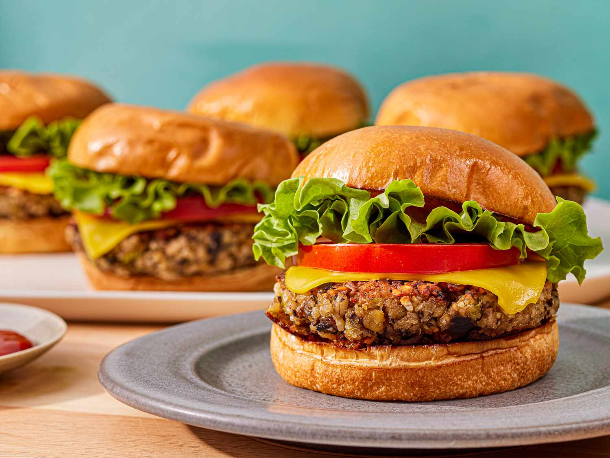

Home
Audhumla Burgers! A little viking's favorite

What is it?
A simple classic that's easy to make and loved by all ages!
Ingredients and Steps
- 1 lb of ground beef
- onions
- salt
- pepper
- buns
- lettuce
- tomatos
- Ketchup/Mustard/relish/your condiment of choice
- Wash your hands before handling the ingrediets!
- Peel, decore, and then dice the onions.
- Knead the onions into the ground beef. Make sure they're evenly distibuted throughout
- knead a tsp of salt and pepper to the beef
- Portion out the beef into patties. The size and thickness is up to you
- With a slicked pan, cook the burgers on a setting of 5 (or whatever setting you're used too)
- Once patties are finished, place them on the buns
- Add vegtables of your choice
- Add condiments of your choice
- Enjoy!